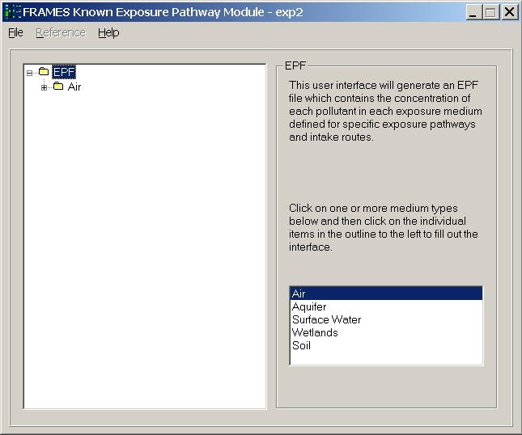
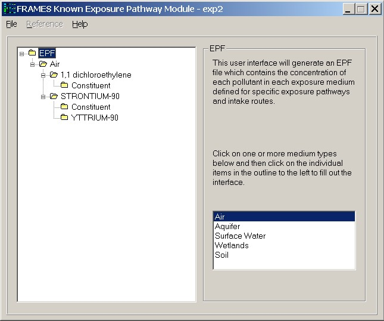
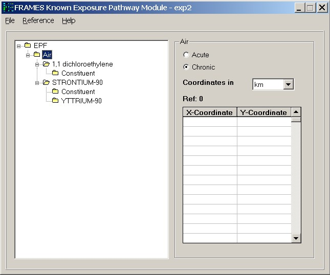
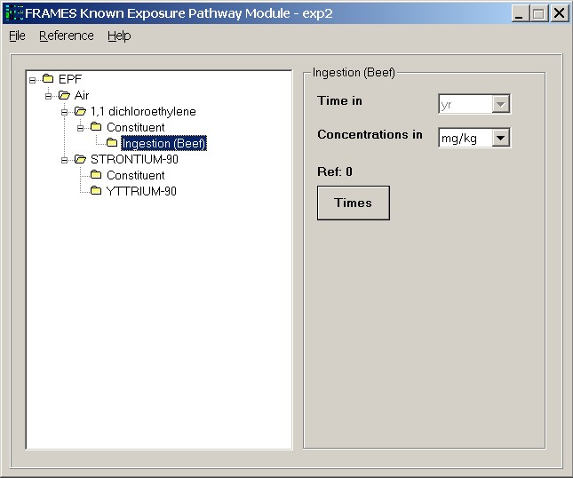

Fig: Start Time and Exposure Duration
Use this module only if you know the constituent concentrations in human exposure pathways. The constituent concentrations, at user provided points in time and media, are entered directly through the interface. This module does not compute the ingrowth of progeny because the user is assumed to know everything about the source, including progeny concentrations. Therefore, this module assumes that the progeny emissions are input along with the parent concentrations.
For more information about the file specification that this module produces see EPF Specifications on the FRAMES web site.
Medium
Select the exposure medium from the options listed. Any number of mediums may be selected for the analysis. Selected mediums will be highlighted. A tree-view of the selected mediums and list of constituents will appear in the left-side of the window. A particular medium may be deselected by clicking on it. Once the medium types are selected, a tree-view of the medium and the constituents appear on the left side of the window. A '+' next to a medium indicates that the menu can be expanded to view the list of constituents as seen in the figures below.

Fig: Medium Selected

Fig: Medium Expanded
Acute/Chronic
Select the type of analysis. The difference between the two involves the time frame of the exposure assessment. If the analysis is for a short duration exposure, then the appropriate model is Acute. On the other hand if the exposure assessment is for a time frame of more than a year, choose Chronic module.
Coordinates
Units: km (kilometers )
Range: Greater than or equal to 0
The X and Y coordinates of the different locations where the receptor was exposed to the constituent through a particular medium is to be entered. The coordinates have to be relative to all the other location reference used in the interface. A minimum of one set of coordinates is required for the analysis. Coordinates must be input for all for all the selected medium.

Fig: Coordinates
Start Times and Exposure Duration
Units: yr (years)
Range: Greater than or equal to 0.
Time is the point in which the exposure occurred and duration is the time window through which the exposure was measured. A starting point in time at which the exposure begun can be entered as 0. All other points of exposure would then be entered relative to the starting point of 0.
Fig: Start Time and Exposure Duration
Constituent Pathways
Select the various modes through which the receptor was exposed to the constituent(s). There are four major constituent pathways - Ingestion, Inhalation, Dermal and External. Ingestion is the process through which the constituent would have been swallowed by the receptor. Inhalation involves the receptor breathing the constituent into the body. Dermal is when the receptor's skin comes in contact with the constituent and External pathway encompasses the receptor being exposed to the constituent without it actually entering the body of the receptor. Any number of selections can be made within each pathway. For radionuclides with progeny, pathways will have to be selected both for the constituent and the progeny.

Fig: Constituent Pathway
Time
Units: yr (years)
Range: Greater than or equal to 0.
A minimum of two times must be entered. Times must be entered in chronological, ascending order (i.e., 0, 5, 10 not 0, 10, 5). The spreadsheet rows must be used consecutively. Anything below a skipped time row will be deleted. A point in time at which a measurement/estimate is given should be relative to all other times entered in the interface and the overall simulation.
Concentration
Units: Varies depending on the pathway
Range: Greater than or equal to 0
Items left blank in rows that have a valid time defined are filled with zeros. All rows after and including the first row with an invalid time are ignored and cleared.

Fig: Time/Concentration